library(ggplot2)
library(dplyr)
library(readr)
library(ggrepel)Fantasy Football Project
Introduction
In this project, I want to look into fantasy football statistics to find better strategies when drafting your team and confirm/deny several “myths” among fantasy football players.
In fantasy football, a group of ~6-14 “owners” take turns drafting teams of real-life NFL players. Each game, individual NFL players are awarded “fantasy points” depending on their performance. Usually, a fantasy team is comprised of 1 Quarterback (QB), 2-3 Running Backs (RB), 2-3 Wide Receivers (WR), 1 Tight End (TE), 1 Defense (D), and 1 Kicker (K). The data I will be using in this analysis uses points per reception (PPR) scoring, which awards an extra point to players every time they catch a pass. For more information on the standard PPR scoring format, look here.
The 5 main questions that I want to answer are:
1: Is the best real-life team also the best fantasy team?
2: Is having several players from the same NFL team on your fantasy team a bad idea?
3: What is the relative value of each position in fantasy football, and how can you use this information to make better drafting decisions?
4: Is there any correlation between a player’s age and their fantasy football performance? Are older players more likely to get injured during the season?
5: How has positional value changed over time?
To do this, I will be using fantasy football scoring data from the 2023 NFL season. In part 5, I will also use data from the past 10 seasons, including the data we have so far for this year.
Packages:
Part 1: Is the best real-life team also the best fantasy team?
My first question is to see how each NFL team would perform based on fantasy football scoring, and compare their performance with the real-life NFL standings from 2023.
In the 2023 NFL season, the regular season standings looked like this:
1: Baltimore Ravens
2: Dallas Cowboys
3: Detroit Lions
4: San Francisco 49ers
5: Buffalo Bills
6: Cleveland Browns
7: Kansas City Chiefs
8: Miami Dolphins
9: Philadelphia Eagles
10: Houston Texans
11: Los Angeles Rams
12: Pittsburgh Steelers
13: Cincinnati Bengals
14: Green Bay Packers
15: Indianapolis Colts
16: Jacksonville Jaguars
17: New Orleans Saints
18: Seattle Seahawks
19: Tampa Bay Buccaneers
20: Denver Broncos
21: Las Vegas Raiders
22: Atlanta Falcons
23: Chicago Bears
24: Minnesota Vikings
25: New York Jets
26: New York Giants
27: Tennessee Titans
28: Los Angeles Chargers
29: Arizona Cardinals
30: New England Patriots
31: Washington Commanders
32: Carolina Panthers
For this task, I will find the total number of fantasy points scored for each team in the NFL.
Importing Data:
PointsPerTeam <- read_csv("PointsPerTeam.csv", show_col_types = FALSE)Grouping by team:
PointsPerTeam_ByTeam <- PointsPerTeam |> group_by(Tm) |> summarize(Total_Points = sum(PPR))
head(PointsPerTeam_ByTeam)# A tibble: 6 × 2
Tm Total_Points
<chr> <dbl>
1 2TM 536.
2 3TM 4
3 ARI 1164.
4 ATL 1255.
5 BAL 1534.
6 BUF 1593 Notice that we have 536.1 points coming from players who played for 2 Teams, and 4.0 points coming from players who played for 3 teams. To add these to our totals, I will look at these individual player’s stats on a per-game basis, and add their points to the teams they played for. I will then remove those rows from our data frame.
Removing Multiple Team listings from data frame:
PointsPerTeam_ByTeam <- PointsPerTeam_ByTeam |> filter(Tm != "3TM" & Tm != "2TM")Adding points for multi-team players (Had to do this manually):
PointsPerTeam_ByTeam[1,2] = 1163.7 + 152.9
PointsPerTeam_ByTeam[2,2] = 1255.5 + 10.1
PointsPerTeam_ByTeam[3,2] = 1534.3 + 1.1
PointsPerTeam_ByTeam[6,2] = 1234.4 + 32.5
PointsPerTeam_ByTeam[8,2] = 1370.5 + 9.7
PointsPerTeam_ByTeam[11,2] = 1690.5 + 5.8
PointsPerTeam_ByTeam[13,2] = 1485.3 + .9
PointsPerTeam_ByTeam[15,2] = 1460.9 - 1.2
PointsPerTeam_ByTeam[16,2] = 1465.5 + 10.1
PointsPerTeam_ByTeam[18,2] = 1485.4 + 20.1
PointsPerTeam_ByTeam[20,2] = 1685.4 + 4.2
PointsPerTeam_ByTeam[21,2] = 1401.3 + 102.9
PointsPerTeam_ByTeam[22,2] = 1488.6 + 21.1
PointsPerTeam_ByTeam[24,2] = 1169.3 + 0.2
PointsPerTeam_ByTeam[25,2] = 1023.7 + 11.2
PointsPerTeam_ByTeam[27,2] = 1204 - 4Next, since our original dataset didn’t have scoring for Kickers or Defense, we will use ESPN’s 2023 Fantasy Scoring to add these values to our data: (They didn’t have a CSV available, so I had to do this manually)
Defense and Kicker Scoring:
Def_scoring <- c(50, 92, 172, 158, 81, 110, 91, 166, 172, 98, 93, 99, 118, 123, 105, 140, 86, 75, 135, 139, 111, 129, 111, 114, 159, 80, 127, 80, 136, 108, 88, 30)
K_scoring <- c(126, 133, 155, 128, 105, 155, 135, 146, 180, 125, 117, 119, 113, 149, 139, 153, 117, 149, 136, 142, 113, 72, 143, 93, 140, 155, 131, 127, 151, 134, 130, 98)Calculating each team’s total fantasy score for the 2023 season:
Total_Score <- data.frame(PointsPerTeam_ByTeam, Def_scoring, K_scoring)
Total_Score <- Total_Score |> mutate(Total_Points_Final = Total_Points + Def_scoring + K_scoring) |> select(Tm, Total_Points_Final)
head(Total_Score) Tm Total_Points_Final
1 ARI 1492.6
2 ATL 1490.6
3 BAL 1862.4
4 BUF 1879.0
5 CAR 1316.0
6 CHI 1531.9To compare the 32 NFL teams’ fantasy performance with their real life performance, we need to add a column with their real life ranking and fantasy ranking to the data frame.
Total_Score$rank <- rank(Total_Score$Total_Points_Final)
Real_Ranking <- c(4, 11, 32, 28, 1, 10, 20, 27, 31, 13, 30, 19, 23, 18, 17, 26, 5, 22, 12, 25, 9, 16, 3, 7, 8, 24, 21, 15, 29, 14, 6, 2)
Total_Score <- data.frame(Total_Score, Real_Ranking)
Total_Score Tm Total_Points_Final rank Real_Ranking
1 ARI 1492.6 8 4
2 ATL 1490.6 7 11
3 BAL 1862.4 27 32
4 BUF 1879.0 28 28
5 CAR 1316.0 1 1
6 CHI 1531.9 10 10
7 CIN 1714.7 21 20
8 CLE 1692.2 17 27
9 DAL 2046.4 32 31
10 DEN 1542.2 11 13
11 DET 1906.3 29 30
12 GNB 1724.9 23 19
13 HOU 1717.2 22 23
14 IND 1640.6 15 18
15 JAX 1703.7 18 17
16 KAN 1768.6 26 26
17 LAC 1652.0 16 5
18 LAR 1729.5 25 22
19 LVR 1511.9 9 12
20 MIA 1970.6 31 25
21 MIN 1728.2 24 9
22 NOR 1710.7 20 16
23 NWE 1404.3 5 3
24 NYG 1376.5 3 7
25 NYJ 1333.9 2 8
26 PHI 1709.3 19 24
27 PIT 1458.0 6 21
28 SEA 1589.4 13 15
29 SFO 1958.7 30 29
30 TAM 1623.4 14 14
31 TEN 1398.0 4 6
32 WAS 1552.6 12 2ggplot(Total_Score, aes(x = Real_Ranking, y = rank, label = Tm)) + geom_point() + theme_bw() + xlab("Real Life Ranking") + ylab("Fantasy Ranking") + geom_text(vjust = 1.5)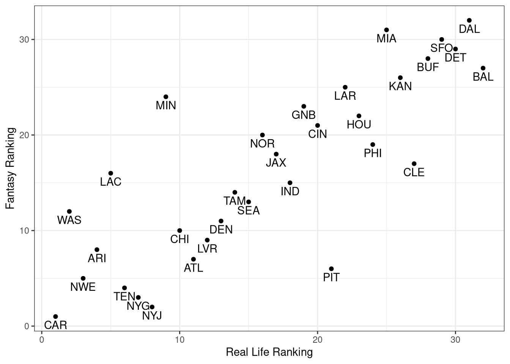
As expected, the better real-life team also tends to perform better in fantasy football. Some interesting outliers are the Minnesota Vikings, who are the 9th worst real-life team, but the 9th best fantasy team. Another interesting team is the Pittsburgh Steelers, who are the 12th best real-life team and the 6th worst fantasy team.
Because many teams have the same win-loss record, lets look at another visualization that compares a team’s number of wins with their total fantasy points scored.
num_wins <- c(4, 7, 13, 11, 2, 7, 9, 11, 12, 8, 12, 9, 10, 9, 9, 11, 5, 10, 8, 11, 7, 9, 4, 6, 7, 11, 10, 9, 12, 9, 6, 4)
Total_Score <- data.frame(Total_Score, num_wins)ggplot(Total_Score, aes(x = num_wins, y = Total_Points_Final, label = Tm)) + geom_point() + theme_bw() + xlab("# of Wins") + ylab("Total Fantasy Points Scored") + scale_x_continuous(breaks = c(2, 4, 6, 8, 10, 12, 14, 16)) + geom_text_repel()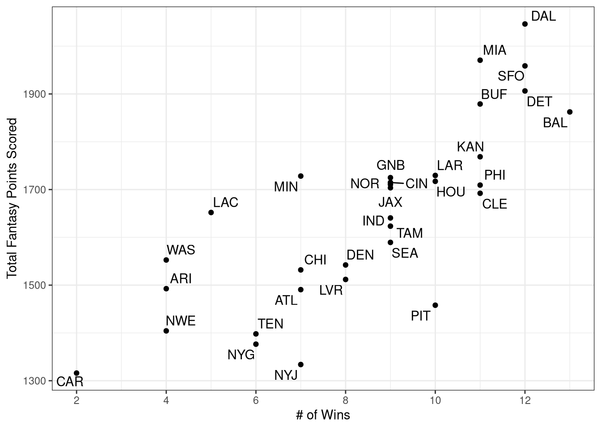
Once again, we see that there is a positive correlation between number of wins and the total number of fantasy points scored. Interestingly, there is lots of variance in points scored for teams with the same number of wins. For example, the difference between the best and worst fantasy scorers with 7 wins is ~400 points!
Although real-life success is a good predictor for fantasy football success on a team-wide scale, the best team in real-life was not the best team in fantasy football in the 2023 regular season. The #1 scoring team in fantasy last year were the Dallas Cowboys, who scored a total of 2046.4 fantasy points while being the #2 ranked real life team. The best real life team were the Baltimore Ravens, who were only the 6th best fantasy team. And if we look at the team who won the Super Bowl last year, the Kansas City Chiefs, they were 7th overall in both fantasy points scored and regular season ranking. I suspect that this discrepancy is due to the imbalance of offensive vs. defensive scoring in fantasy football. In real-life, it could be argued that offense and defense are equally important. In fantasy, however, many formats have individual offensive players but defense is represented by one “player” consisting of a whole team’s defensive performance.
Part Two: Is having several players from the same NFL team on your fantasy team a bad idea?
Next, I want to investigate the impact that players on the same team have on each other in the game of fantasy football. Common advice that you hear when drafting your fantasy football team is “don’t draft a running back and wide receiver from the same team.”
To determine the impact that a team’s running back and wide receiver have on each other, let’s visualize the relationship between fantasy points scored by the best running backs and wide receivers for each team in the NFL. For this investigation, I will be using players’ points per game played (PPG) as a metric because I want to compare individual players with one another. By using this metric, the data won’t be affected as much by players who may have missed games due to injury.
Importing Data:
PlayerScoringPerGame <- read_csv("PlayerScoringPerGame.csv")Rows: 632 Columns: 5
── Column specification ────────────────────────────────────────────────────────
Delimiter: ","
chr (4): Player, Tm, FantPos, -9999
dbl (1): PPR
ℹ Use `spec()` to retrieve the full column specification for this data.
ℹ Specify the column types or set `show_col_types = FALSE` to quiet this message.head(PlayerScoringPerGame)# A tibble: 6 × 5
Player Tm FantPos PPR `-9999`
<chr> <chr> <chr> <dbl> <chr>
1 Christian McCaffrey*+ SFO RB 24.5 McCaCh01
2 CeeDee Lamb*+ DAL WR 23.7 LambCe00
3 Josh Allen BUF QB 23.1 AlleJo02
4 Tyreek Hill*+ MIA WR 23.5 HillTy00
5 Jalen Hurts* PHI QB 21 HurtJa00
6 Raheem Mostert* MIA RB 17.8 MostRa00Cleaning up data set:
PlayerScoringPerGame <- PlayerScoringPerGame |> select(Player, Tm, FantPos, PPR) |> filter(Tm != "3TM" & Tm != "2TM") |> filter(FantPos == "RB" | FantPos == "WR") |> arrange(desc(PPR))Finding the best WR and RB from each team:
BestWrRBPerTeam <- PlayerScoringPerGame |> group_by(Tm, FantPos) |> summarize(BestPlayer = max(PPR, na.rm = TRUE))`summarise()` has grouped output by 'Tm'. You can override using the `.groups`
argument.BestWrRBPerTeam# A tibble: 64 × 3
# Groups: Tm [32]
Tm FantPos BestPlayer
<chr> <chr> <dbl>
1 ARI RB 15.5
2 ARI WR 9.62
3 ATL RB 14.5
4 ATL WR 10.9
5 BAL RB 11.7
6 BAL WR 12.9
7 BUF RB 13.7
8 BUF WR 16.1
9 CAR RB 10.7
10 CAR WR 13.6
# ℹ 54 more rowsSeparating Data Frames By Position Averages and Finding the Differences:
BestWRPerTeam <- BestWrRBPerTeam |> filter(FantPos == "WR")
colnames(BestWRPerTeam) <- c("Tm", "FantPos", "BestWRAvg")
BestRBPerTeam <- BestWrRBPerTeam |> filter(FantPos == "RB")
colnames(BestRBPerTeam) <- c("Tm", "FantPos", "BestRBAvg")
RB_WR_Comp <- data.frame(BestWRPerTeam, BestRBPerTeam)
RB_WR_Comp <- RB_WR_Comp |> select(Tm, BestWRAvg, BestRBAvg) |> mutate(Difference = abs(BestWRAvg - BestRBAvg))
RB_WR_Comp Tm BestWRAvg BestRBAvg Difference
1 ARI 9.62 15.50 5.88
2 ATL 10.90 14.50 3.60
3 BAL 12.90 11.70 1.20
4 BUF 16.10 13.70 2.40
5 CAR 13.60 10.70 2.90
6 CHI 16.90 10.10 6.80
7 CIN 16.40 15.70 0.70
8 CLE 15.10 12.40 2.70
9 DAL 23.70 13.10 10.60
10 DEN 11.90 11.20 0.70
11 DET 20.70 16.10 4.60
12 GNB 13.60 12.30 1.30
13 HOU 17.40 9.84 7.56
14 IND 15.60 15.60 0.00
15 JAX 13.50 16.60 3.10
16 KAN 13.30 15.30 2.00
17 LAC 21.50 13.20 8.30
18 LAR 17.60 21.30 3.70
19 LVR 15.60 13.90 1.70
20 MIA 23.50 17.80 5.70
21 MIN 20.20 8.32 11.88
22 NOR 14.50 17.90 3.40
23 NWE 12.50 12.10 0.40
24 NYG 8.88 15.90 7.02
25 NYJ 12.50 17.10 4.60
26 PHI 17.00 12.50 4.50
27 PIT 12.30 11.60 0.70
28 SEA 14.10 13.30 0.80
29 SFO 16.20 24.50 8.30
30 TAM 16.60 15.80 0.80
31 TEN 13.20 14.50 1.30
32 WAS 12.30 13.20 0.90Visualizations:
ggplot(RB_WR_Comp, aes(x = BestRBAvg, y = BestWRAvg, label = Tm)) + geom_point() + geom_text_repel() + scale_x_continuous(breaks = c(5, 10, 15, 20, 25)) + scale_y_continuous(breaks = c(5, 10, 15, 20, 25)) + geom_abline(intercept = 0, slope = 1, color = "red") + theme_bw() + xlab("Top RB Points Per Game") + ylab("Top WR Points Per Game")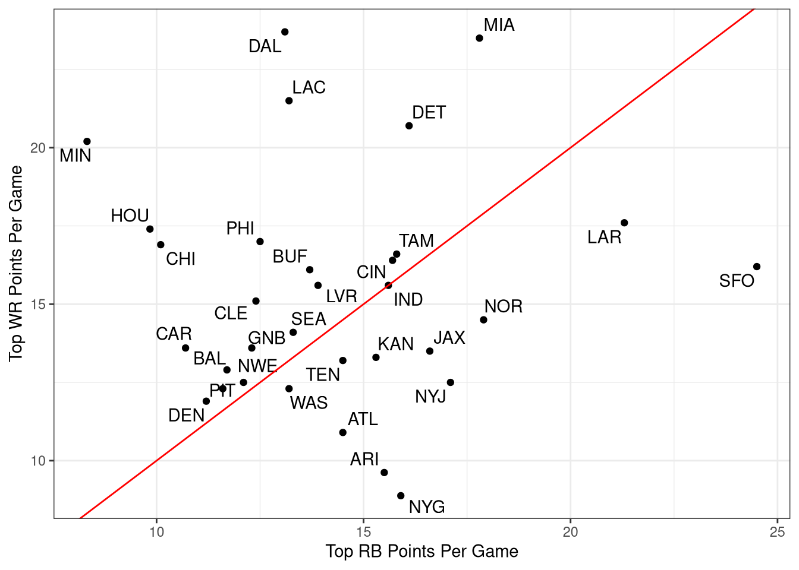
In this graph, we can see the difference between each team’s best WR and best RB in average fantasy scoring. The closer a team is to the red line, the more balanced their players’ scoring was. Teams above the red line had their best WR score more than their best RB, and vice versa for teams below the red line. It is quite clear that for specific teams, one position scored much more / less than the other. Let’s take a look at our list of the highest scoring individual players from before.
PlayerScoringPerGame# A tibble: 376 × 4
Player Tm FantPos PPR
<chr> <chr> <chr> <dbl>
1 Christian McCaffrey*+ SFO RB 24.5
2 CeeDee Lamb*+ DAL WR 23.7
3 Tyreek Hill*+ MIA WR 23.5
4 Keenan Allen* LAC WR 21.5
5 Kyren Williams* LAR RB 21.3
6 Amon-Ra St. Brown*+ DET WR 20.7
7 Justin Jefferson MIN WR 20.2
8 Alvin Kamara NOR RB 17.9
9 Raheem Mostert* MIA RB 17.8
10 Puka Nacua* LAR WR 17.6
# ℹ 366 more rowscor(RB_WR_Comp$BestRBAvg, RB_WR_Comp$BestWRAvg)[1] 0.03173655Here, we can pinpoint the players causing these large discrepancies in RB and WR average for their team. Players like Christian McCaffrey and CeeDee Lamb had a much higher average score than their WR/RB counterpart, so drafting other players on their team likely will not be a great idea. This is true for several other star players on the graph, with the most egregious example being Minnesota’s Justin Jefferson, who averaged 11.88 more points than the top running back on his team. A key similarity between all the players mentioned previously is that they are known to be huge stars on their team, and are drafted very early in most fantasy drafts. So, drafting multiple players on the same team is only bad if it is the same team as a star player (eg. your first round pick.) After the top ~7-8 star players, the differences get much smaller between teams’ best RB and WR. We see that the correlation between the two is 0.0317, which is very close to 0. So, in conclusion, as long as you do not draft teammates of a star player, having multiple players from one team likely won’t impact your fantasy team’s performance on a season-wide scale.
Part 3: Positional Value
Next, I would like to explore the value of each (offensive) position in Fantasy Football. First, let’s look at how many points each position scores, on average. Since most fantasy football leagues have 8-12 people, each with ~12-15 players on their team, I will only be looking at the top 180 fantasy scorers. I am excluding Kickers and Defense for this ranking because in general, these positions are drafted much later in fantasy drafts and have much less of an impact on the overall strategy of drafting.
Importing Data:
PosnValue <- read_csv("PosnValue.csv", show_col_types = FALSE)Cleaning and Sorting Data:
Position_data <- PosnValue |> select(Rk, FantPos, PPR) |> group_by(FantPos)First, let’s look at the distribution of points per game for each position.
ggplot(Position_data, aes(x = PPR, fill = FantPos)) + geom_histogram(binwidth = 1, color = "black") + facet_wrap(~FantPos) + theme_bw() + xlab("Points Per Game (PPG)") + ylab("Count") + theme(legend.position="none")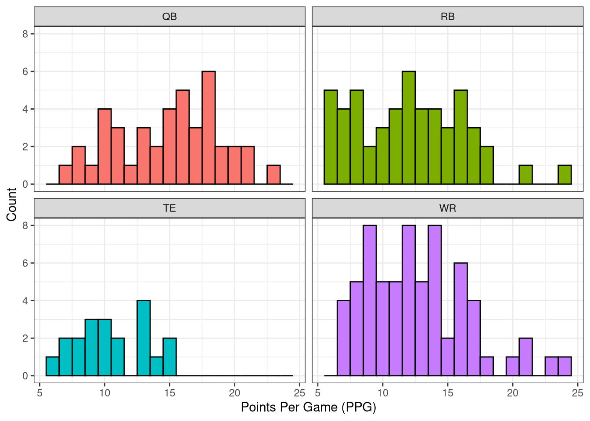
We can see that WRs and QBs have more players scoring in the 20+ range, and there appears to be two RBs who are the only players at their position scoring 20+ PPG. There appears to be more WRs in our dataset overall, which makes sense because NFL teams tend to have 4-7 WRs on their team, and only 2-4 of the other 3 positions. TEs are the lowest scoring position by a wide margin, with no TEs scoring more than 15 PPG. Here is another look at this data:
ggplot(Position_data, aes(y = PPR, x = FantPos, fill = FantPos)) + geom_boxplot() + theme_bw() + theme(legend.position="none") + xlab("Position") + ylab("Points Per Game (PPG)")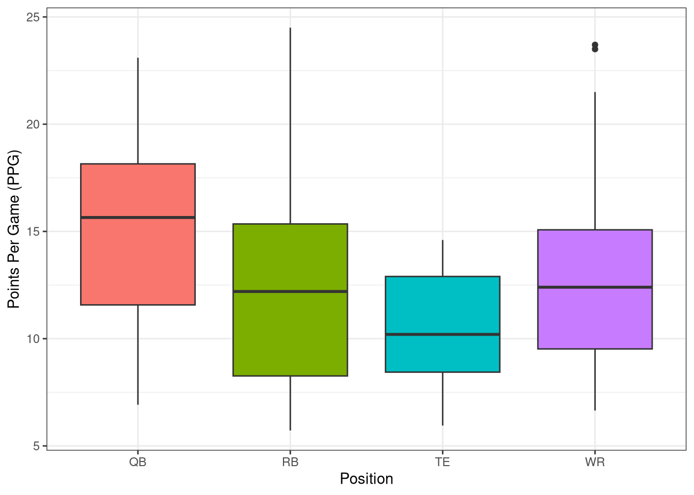
QB has the highest Q1, Median, and Q3 PPG out of the 4 positions, but notice that the highest scoring individual player is a RB, followed by a WR. The median PPG is just about even between RBs and WRs, and once again we see that TEs are the lowest scoring position overall. The best TEs do tend to score more than the median RB and WR, however.
Now, let’s look at the relationship between position and overall fantasy ranking. This fantasy ranking is based on the number of points a player scores and how much better they are than an average player at their position.
ggplot(Position_data, aes(x = Rk, y = PPR, color = FantPos)) + geom_point(size = 2.5) + theme_bw() + theme(legend.title=element_blank()) + xlab("Overall Fantasy Rank") + ylab("Points Per Game (PPG)") 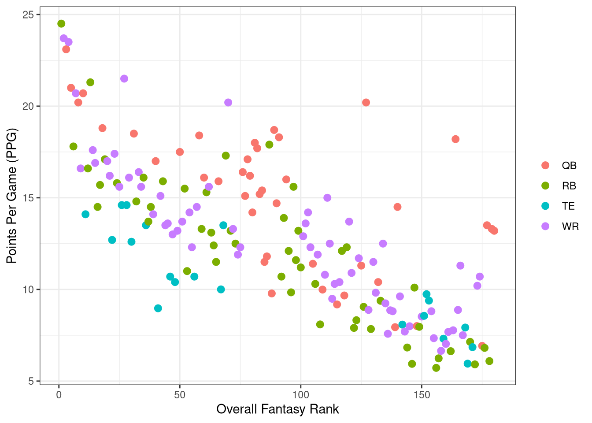
The top ranked players tend to be mostly RB’s and WR’s, with a handful of QB’s and TE’s mixed in. Interestingly, there appears to be a sizeable gap between the top ~8 TE’s and the rest of the TE’s appearing in the top 180. Since there are a larger number of WR’s who average 10+ points than there are RB’s, it may be a good idea to prioritize RB’s in your fantasy football draft. For TE’s, it makes sense to ensure you get a top-8 player, because the rankings and average points scored per game decrease significantly after that range.
Next, I want to use our data to determine the best drafting strategies for the QB position. A common “myth” in fantasy football is that people who draft a QB very early tend to be inexperienced players. Let’s find out if drafting a QB early is truly a beginner pitfall, or if there are some scenarios where it is a viable strategy.
Since most fantasy football leagues cap out at ~14 players and only allow for 1 starting QB at a time, I will filter the data for only the top 15 fantasy QB’s.
QB_data <- PosnValue |> filter(FantPos == "QB") |> select(Rk, Player, PPR) |> arrange(Rk)
QB_data <- QB_data[1:15,]
QB_data# A tibble: 15 × 3
Rk Player PPR
<dbl> <chr> <dbl>
1 3 Josh Allen 23.1
2 5 Jalen Hurts* 21
3 8 Dak Prescott* 20.2
4 10 Lamar Jackson*+ 20.7
5 18 Jordan Love 18.8
6 31 Brock Purdy* 18.5
7 40 Jared Goff 17
8 50 Patrick Mahomes* 17.5
9 58 C.J. Stroud* 18.4
10 60 Baker Mayfield* 16.1
11 66 Tua Tagovailoa* 15.9
12 76 Trevor Lawrence 16.4
13 77 Sam Howell 15.1
14 78 Russell Wilson 17.1
15 79 Matthew Stafford* 16.2Now that we know where our cutoffs are for the top, middle, and bottom tier QB’s, we can add a new column with each player’s tier.
Tier <- c("Top", "Top", "Top", "Top", "Top", "Mid", "Mid", "Mid", "Mid", "Mid", "Bottom", "Bottom", "Bottom", "Bottom", "Bottom")
QB_data_tiered <- data.frame(QB_data, Tier)
QB_data_tiered Rk Player PPR Tier
1 3 Josh Allen 23.1 Top
2 5 Jalen Hurts* 21.0 Top
3 8 Dak Prescott* 20.2 Top
4 10 Lamar Jackson*+ 20.7 Top
5 18 Jordan Love 18.8 Top
6 31 Brock Purdy* 18.5 Mid
7 40 Jared Goff 17.0 Mid
8 50 Patrick Mahomes* 17.5 Mid
9 58 C.J. Stroud* 18.4 Mid
10 60 Baker Mayfield* 16.1 Mid
11 66 Tua Tagovailoa* 15.9 Bottom
12 76 Trevor Lawrence 16.4 Bottom
13 77 Sam Howell 15.1 Bottom
14 78 Russell Wilson 17.1 Bottom
15 79 Matthew Stafford* 16.2 BottomBox Plots:
ggplot(QB_data_tiered, aes(x = factor(Tier), y = PPR)) + geom_boxplot() + theme_bw() + xlab("Tier") + ylab("Points Per Game (PPG)")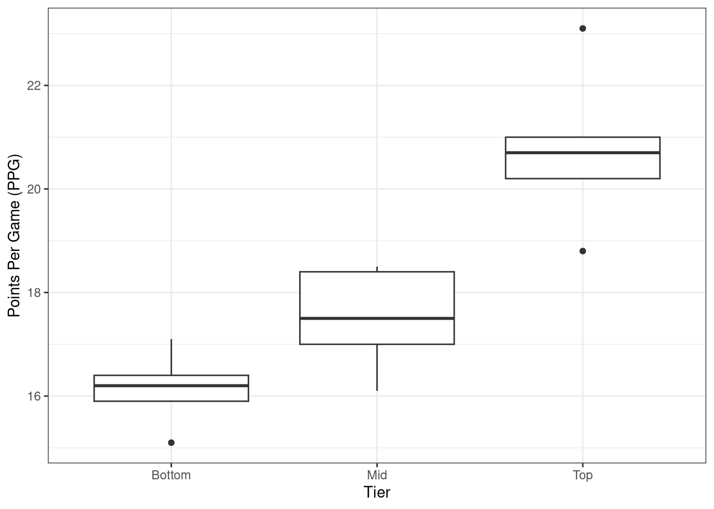
Here, we can see the separation between the top 5 QBs and QBs ranked 6-15. We see that there is both a high and a low outlier in the top-5 QBs, and that one of the bottom-tier QBs is ranked higher than one of the middle-tier QBs. (This is likely due to an injury, as the bottom-tier QB missed games and scored a lower total number of points, but they had a higher average PPG than the mid-tier QB.) We can also see that the difference between the median bottom-tier and mid-tier QB is only ~1.5 points, while the difference between the median middle-tier QB and top-tier QB is ~3 points. Let’s change our tier system to just two tiers to better reflect the data.
QB_data_tiered$Tier <- c("Top", "Top", "Top", "Top", "Not", "Not", "Not", "Not", "Not", "Not", "Not", "Not", "Not", "Not", "Not")New Box Plots:
ggplot(QB_data_tiered, aes(x = factor(Tier), y = PPR)) + geom_boxplot() + theme_bw() + xlab("Tier") + ylab("Points Per Game (PPG)")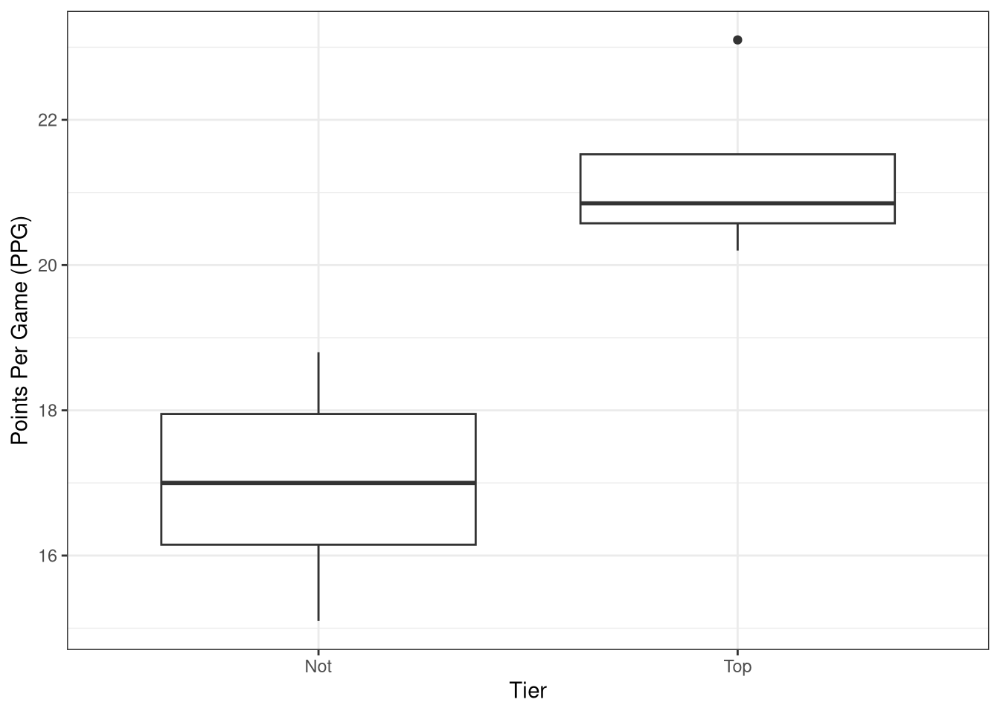
There is a large separation between the top 4 QB’s and the rest of the top 15. Based on our data, it makes sense to draft a QB early if you are getting one of the top 4 in the league, but after that point, the difference between the next-best QB’s is less pronounced. So, if you miss out on drafting one of the best QB’s, there is no need to rush in drafting your QB.
In conclusion, drafting a QB very early can be a valid strategy if you get one of the top scoring QBs, but when the draft takes place, there is no way of knowing which QB will perform the best or if the top performers from last year will put up the same numbers in the following season. This strategy is ultimately a gamble, but since the top scoring QBs are on par with the top scoring RBs and WRs as we saw before, it could pay off if you pick the right player.
Part 4: How does age affect fantasy performance?
Another common piece of advice in fantasy football is “don’t draft older players, they score less points overall and are more likely to get injured.” Let’s use our data to confirm/deny this argument.
For this, we will look at the top 180 players based on total fantasy points scored.
Importing & Cleaning Data
AgeData <- read_csv("AgeData.csv", show_col_types = FALSE)
AgeData <- AgeData[1:180, ]
head(AgeData)# A tibble: 6 × 5
FantPos Age G GS PPR
<chr> <dbl> <dbl> <dbl> <dbl>
1 RB 27 16 16 391.
2 WR 24 17 17 403.
3 QB 27 17 17 393.
4 WR 29 16 16 376.
5 QB 25 17 17 357.
6 RB 31 15 15 268.First, let’s look at the overall age distribution in the NFL:
ggplot(AgeData, aes(x = Age, fill = FantPos)) + geom_histogram(binwidth = 1, color = "Black") + theme_bw() + ylab("Count")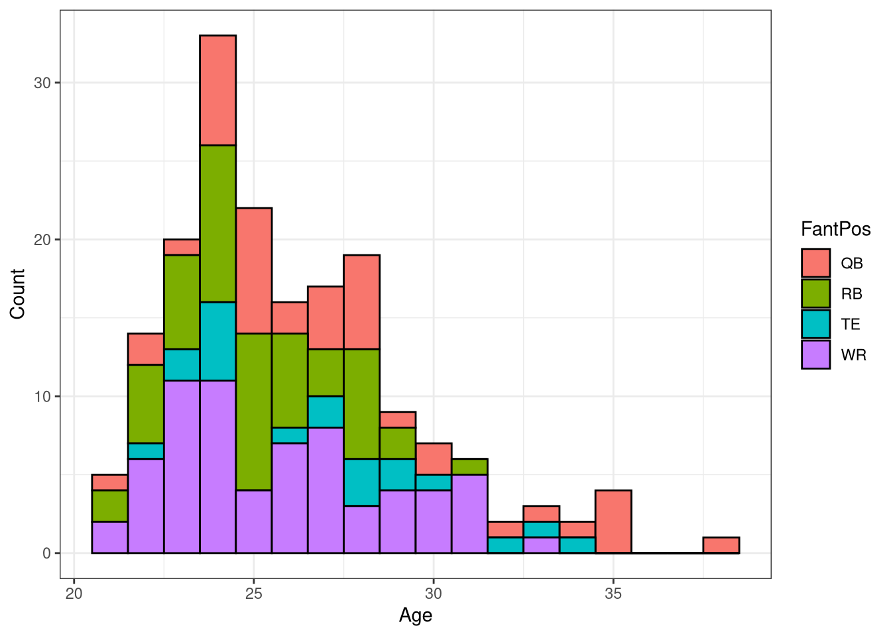
Age peaks at 24 and generally trails off as age increases. The position with the oldest players is QB, followed by TE. Interestingly, there is only 1 RB older than 30 in our data set, which shows that the careers of this position are generally shorter than other positions.
Let’s look at how many points players score based on their age:
ggplot(AgeData, aes(x = Age, y = PPR)) + geom_point() + geom_smooth(method = "lm", se = FALSE) + theme_bw() + ylab("Total Fantasy Points Scored")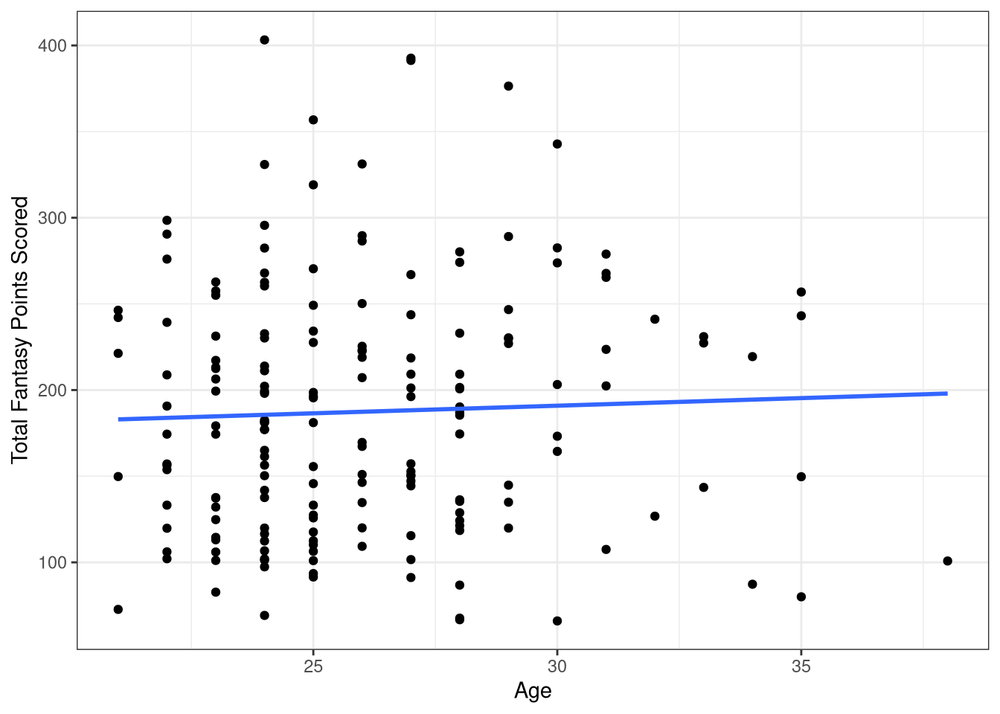
There is a very weak positive relationship between age and total fantasy points scored, but there is barely any correlation between the two variables.
Let’s take another look using average fantasy points scored for each age.
AgeAverages <- AgeData |> group_by(Age) |> summarize(MeanScore = mean(PPR))
ggplot(AgeAverages, aes(x = Age, y = MeanScore)) + geom_point() + theme_bw() + geom_smooth(method = "loess", se = FALSE) + ylab("Points Per Game (PPG)")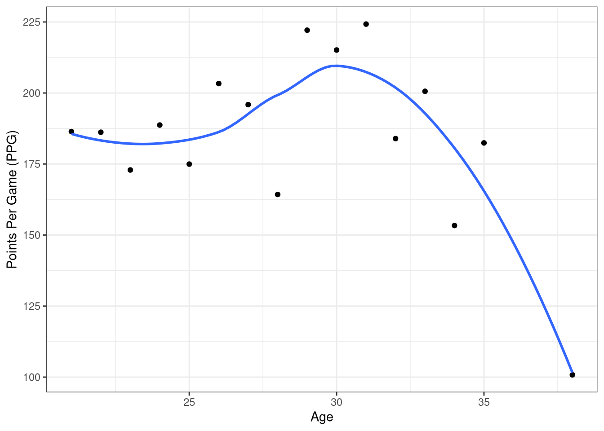
When we use the average points scored per game, we see that the value slowly increases before peaking at ~30, and then drops off.
Let’s see if this is different based on position:
ggplot(AgeData, aes(x = Age, y = PPR, color = FantPos)) + geom_point() + geom_smooth(method = "lm", se = FALSE) + theme_bw() + facet_wrap(~ FantPos) + ylab("Total Fantasy Points Scored")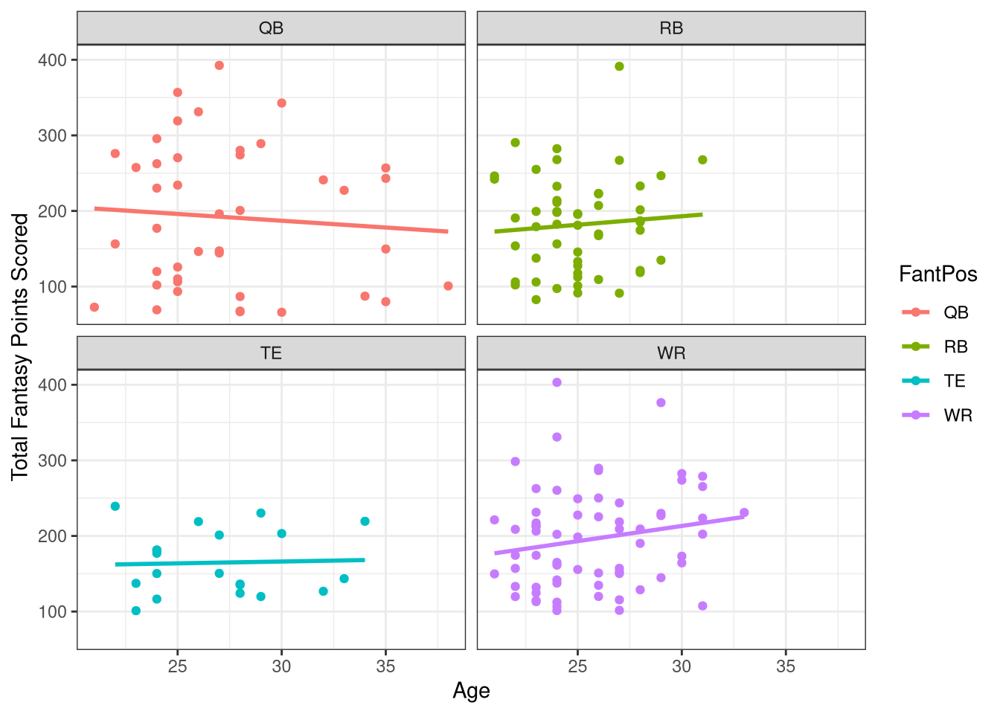
For WRs and RBs, points scored slightly trend upward with age, and for QBs, points scored slightly trends down. TEs stay just about the same. All of these relationships are very weak, however, so age does not have a very strong impact on fantasy points scored.
Again, with average points per game separated by position.
AgeAverages_p <- AgeData |> group_by(Age, FantPos) |> summarize(MeanScore = mean(PPR))
ggplot(AgeAverages_p, aes(x = Age, y = MeanScore, color = FantPos)) + geom_point() + geom_smooth(method = "loess", se = FALSE) + theme_bw() + ylab("Points Per Game (PPG)")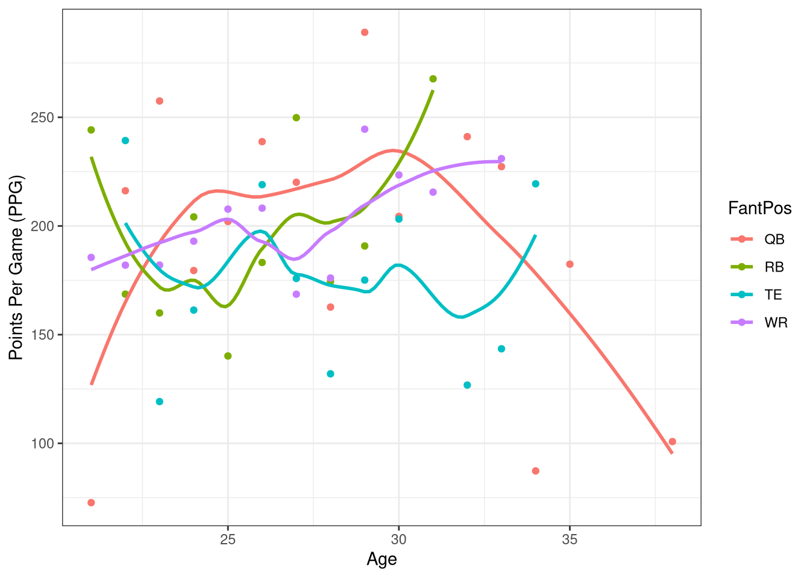
Based on this plot, the PPG for each position based on age varies. The QBs have a concave down parabola, the RBs have a roughly concave up parabola, the WRs trend upwards, dip down at age ~26, and then trend upward again, and the TEs are generally all over the place. These lines are generally not very accurate due to our lack of data points, as we can see that some of the points are very far away from their associated loess lines. These wildly different trends are interesting, nonetheless.
Next, let’s see how injuries effect players as they age. For this, I will only be looking at the top 120 fantasy players. I am cutting out 1/3 of our sample size because many of the lower-ranked players missed time because they weren’t starting for their team, not because they were injured. A limitation of the data set is that I do not have information on why a player didn’t play a game, only the number of games they played in.
AgeData_Top <- AgeData[1:120, ]
AgeData_Top_Avg <- AgeData_Top |> group_by(Age) |> summarize(MeanG = mean(G))
ggplot(AgeData_Top_Avg, aes(x = Age, y = MeanG)) + geom_point() + theme_bw() + ylab("Mean # of Games Played")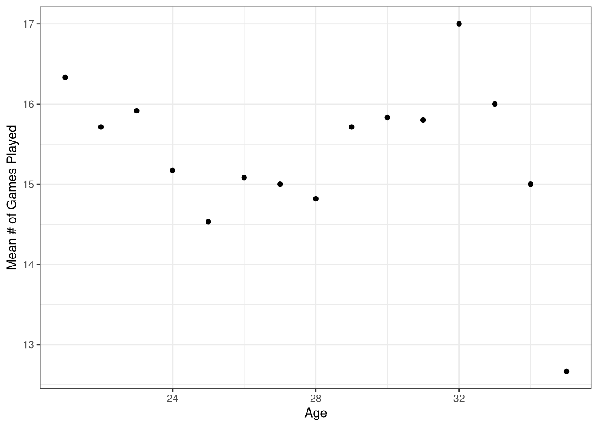
Mean number of games played trends down until age 28, before spiking back up again. To get a better look at injuries specifically, I will filter out players who missed 0 or 1 game. This is more likely to capture injury trends, since a player missing more than 1 game is most commonly due to a prolonged injury.
AgeData_Inj <- AgeData_Top |> group_by(Age) |> filter(G <= 15) |> summarize(MeanG = mean(G))
ggplot(AgeData_Inj, aes(x = Age, y = MeanG)) + geom_point() + geom_smooth(method = "loess", se = FALSE) + theme_bw() + ylab("Mean # of Games Played")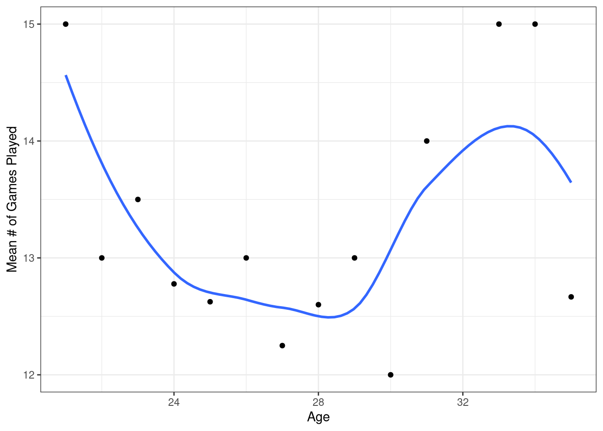
Based on this scatterplot, it looks like players who get injured are more likely to miss more time the older they are, up until age ~28. I suspect that the spike in games played among players who get injured after age ~30 is due to the small sample size of players who are age 30+ as we saw in our previous histogram. Also note that this dataset is only consisting of the top 120 overall fantasy players, so players who have a very long / season ending injury would not show up here.
In conclusion, it seems as though age has little to no impact on fantasy points scored, regardless of position. There is some evidence that out of fantasy-relevant players who get injured, they tend to miss more time the older they are. Overall, you shouldn’t be too afraid to draft older players in fantasy football, as they tend to score just about the same number of points than younger players.
Part 5: Multi-year Analysis
Finally, I will look at fantasy football data from this year and the last 10 years (including the data we have so far for this season) to see if the value of certain positions has shifted over time.
Importing Data
YoYStats <- read_csv("YoYFantasy.csv", show_col_types = FALSE)
Yearly_data <- YoYStatsFirst, lets look at the average points per game of the top 180 fantasy players each year
Yearly_data_grouped <- Yearly_data |> group_by(Year) |> summarize(AvgPPG = mean(PPR), SePPG = sd(PPR))ggplot(Yearly_data_grouped, aes(x = as.factor(Year), y = AvgPPG, group = 1)) + geom_point() + coord_cartesian(ylim = c(10, 15)) + theme_bw() + geom_line() + xlab("Year") + ylab("Average PPG of Top 180 Fantasy Players")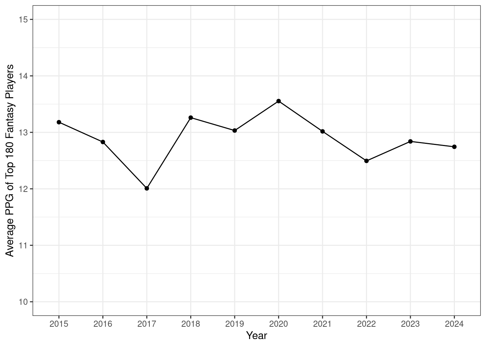
PPG has stayed relatively consistent throughout the years, with an low point in 2017, and a peak in 2020.
Here’s another look at this data in with box plots.
Yearly_data_box <- Yearly_data |> group_by(Year)
ggplot(Yearly_data_box, aes(y = PPR, fill = as.factor(Year))) + geom_boxplot() + facet_wrap(~ Year) + theme_bw() + theme(legend.position="none") + ylab("Points Per Game (PPG)")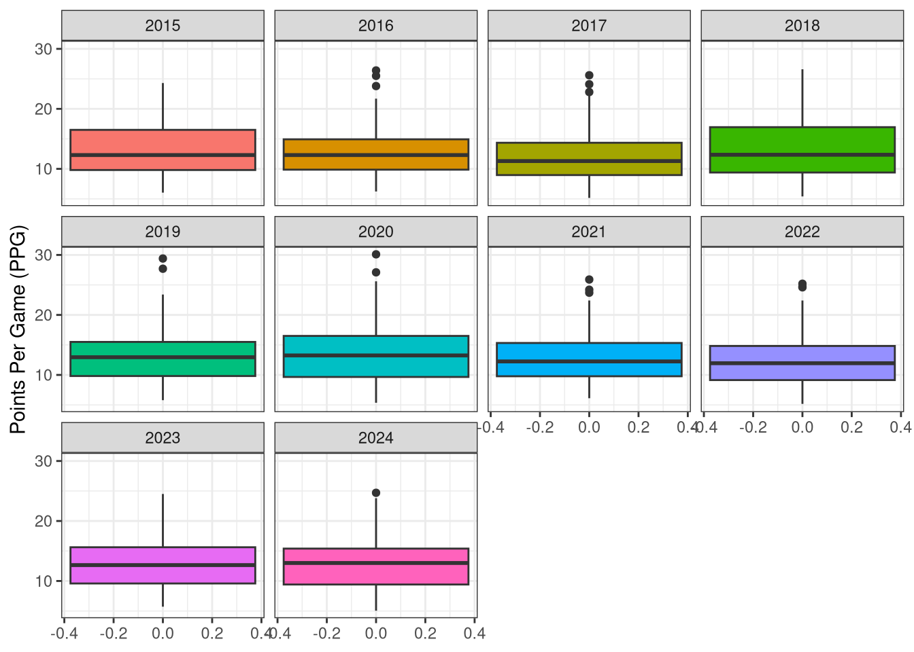
2015, 2018, and 2023 are the only years with no outliers. The only year to have a player eclipse 30 PPG is 2020, with 2019 being very close.
Now let’s see how different positions have scored over time
Yearly_data_p <- Yearly_data |> group_by(Year, FantPos) |> summarize(AvgPPG = mean(PPR))
ggplot(Yearly_data_p, aes(x = as.factor(Year), y = AvgPPG, color = FantPos, group = FantPos)) + geom_point() + theme_bw() + geom_line() + ylab("Average PPG") + xlab("Year")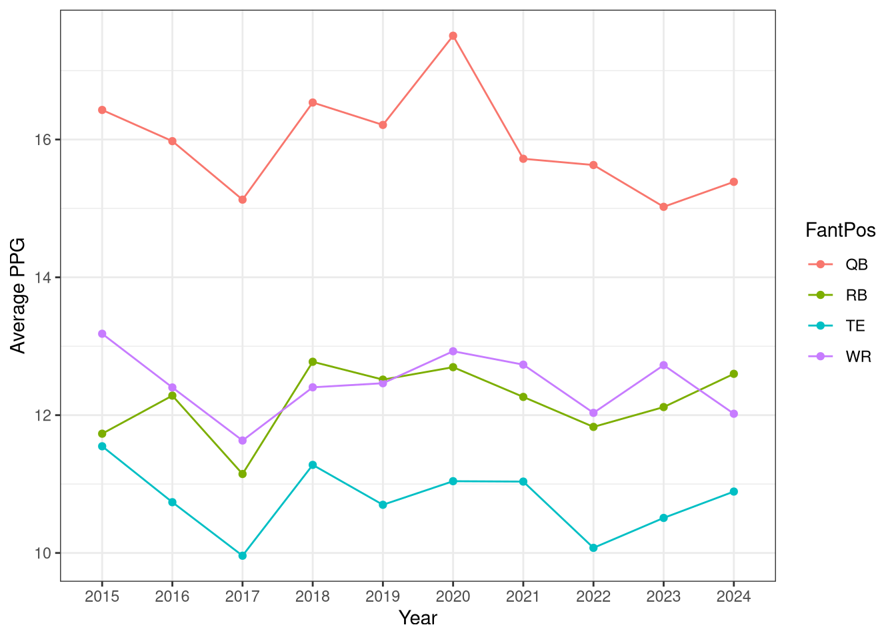
Over the last 10 years, QBs have consistently been the top scoring position. The number two spot has primarily gone to WR, with RBs taking over in 2018, 2019 (barely), and most recently, in 2024. TEs have remained the lowest scoring position, but they have been on an upward trend since 2022. Interestingly, TEs were very close to RBs in 2015, but since then the gap between TE and the next best scoring position has been larger.
The most important aspect of a fantasy football draft is the first round. A good first round pick will set you up well for the season, while a sub-par pick is a detriment to the strength of your team. So, let’s look how the positions of the top 10 fantasy players each year has changed over time to get a better sense of what position should be targeted in the first round.
top_ten_year <- Yearly_data |> group_by(Year) |> arrange(desc(PPR)) |> slice(1:10)
top_ten_year# A tibble: 100 × 3
# Groups: Year [10]
FantPos PPR Year
<chr> <dbl> <dbl>
1 WR 24.3 2015
2 QB 24.3 2015
3 WR 23.4 2015
4 QB 21.5 2015
5 WR 21.3 2015
6 WR 21.2 2015
7 RB 21.1 2015
8 QB 21 2015
9 WR 20.7 2015
10 QB 20.3 2015
# ℹ 90 more rowsggplot(top_ten_year, aes(x = Year, fill = FantPos)) + geom_histogram(binwidth = 1, color = "black") + scale_x_continuous(breaks = seq(2015, 2024, 1)) + theme_bw() + scale_y_continuous(breaks = seq(0, 10, 1))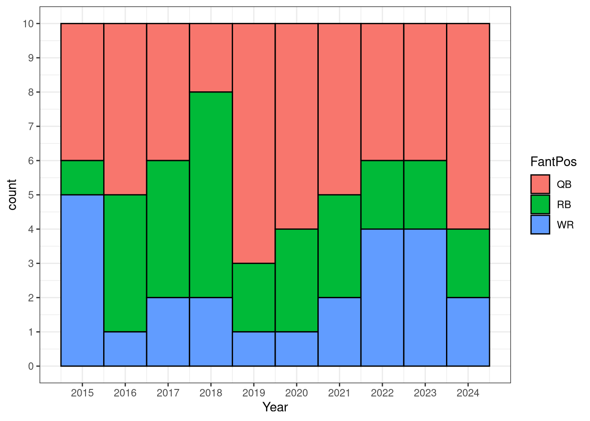
QBs generally make up ~40-50% of the top 10 each year, with this percentage peaking at 7-% in 2019. The prevalence of RB/WR in the top 10 has varied over the years, with there being many more WRs in 2015 before RBs took over for several years after that. From 2022-2023 WRs are once again more common than RBs in the top 10, with there being an even split so far in 2020.
Let’s look at this again, but with the top 24 players each year:
top_24_year <- Yearly_data |> group_by(Year) |> arrange(desc(PPR)) |> slice(1:24)ggplot(top_24_year, aes(x = Year, fill = FantPos)) + geom_histogram(binwidth = 1, color = "black") + scale_x_continuous(breaks = seq(2015, 2024, 1)) + theme_bw() + scale_y_continuous(breaks = seq(0, 24, 2))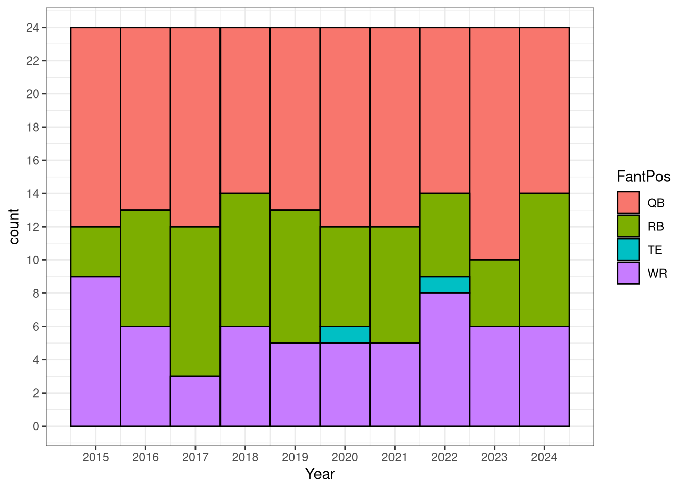
When we change our bounds to the top 24 players each year, we see that our trend from before continues. A couple TEs are even in the top 24 in 2020 and 2022! It looks like WRs were popular in 2015, with RBs taking over in the late 2010’s, and WRs taking back over in the 2020’s.
In conclusion, it seems as though the positional value of QBs has remained fairly consistent, and the value of RBs/WRs has been cyclical in nature over the last 10 years. Based on our data so far for 2024, it looks like running backs are back on the rise after several seasons of WRs making up more of the top 10 & top 24. Sadly for TEs, it is almost never a good idea to draft them early, as only 2 TEs have been in the top 24 fantasy scorers over the last 10 years. So, based on these findings and our findings from the analysis of the QB position, the optimal first-round pick in next year’s draft would likely be a top-ranked QB or a top-ranked running back.
References:
Data: Pro Football Reference